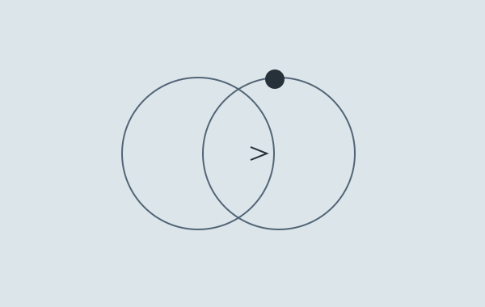
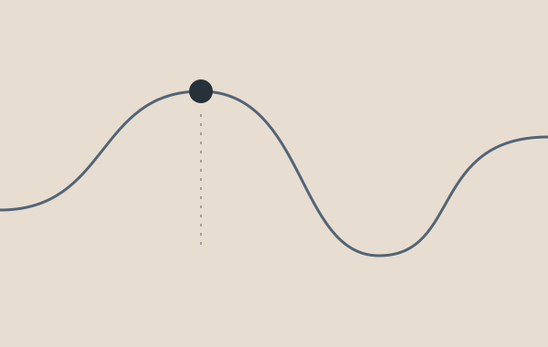
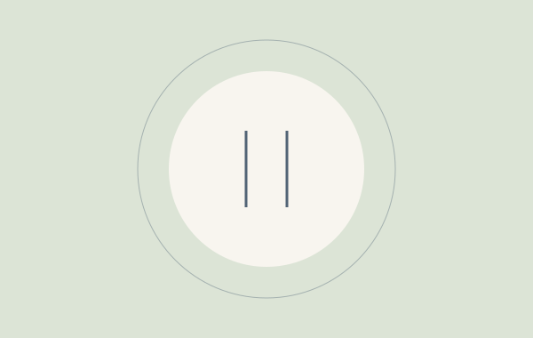

CATATAN DARI LINIPULIH.IDSedikit lebih paham.
Sedikit lebih paham.
Sedikit lebih lega.
Mulai dari pertanyaan yang sering muncul di kepala. Kita membacanya pelan-pelan, dengan bahasa yang dekat.

Kenapa masih ingin mengecek, padahal sudah selesai?
Mengenali jarak antara dorongan, tindakan, dan rasa tenang yang hanya sebentar.
4 menit baca

Yang hilang juga sebuah rutinitas.
Saat sebuah hubungan selesai, hari-hari kita ikut berubah bentuk.
3 menit baca

Tidak harus langsung kuat. Mulai dari jeda.
Memberi sedikit ruang sebelum mengikuti dorongan yang terasa mendesak.
3 menit baca
SATU LANGKAH YANG BISA KAMU PILIHKamu boleh mulai dari